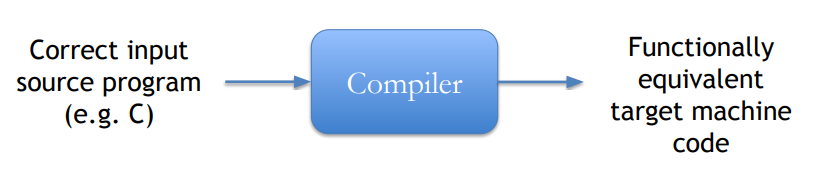
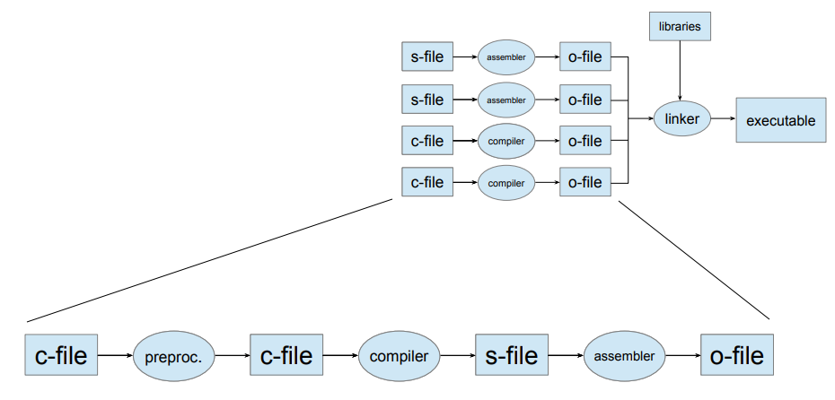
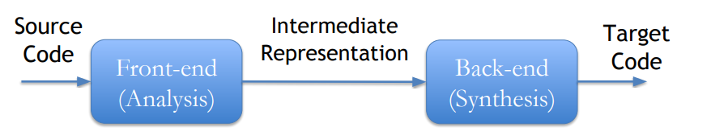
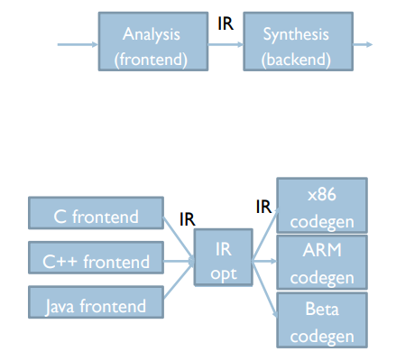
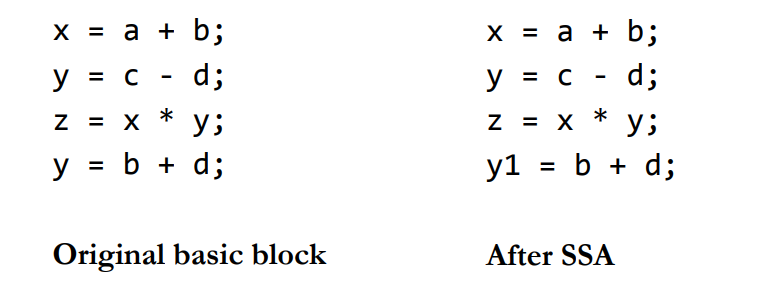
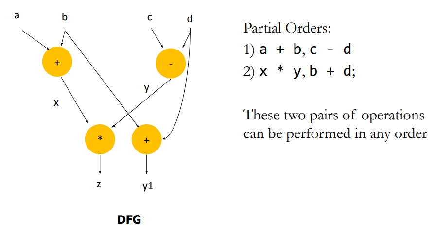
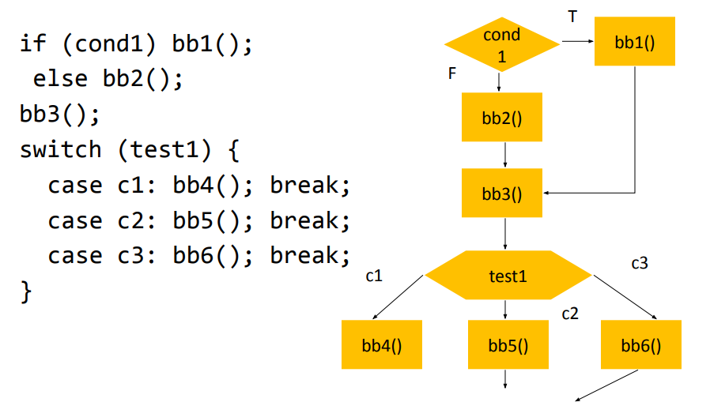
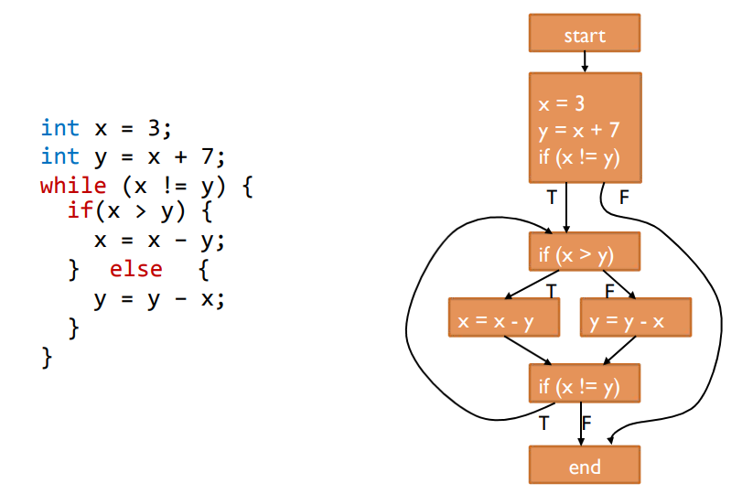

Compilation and Optimizations
- Chapter 5 (5.1 - 5.7)
Intro to Compilers
Overview
▪ Programs are divided into compilation units – Provide degree of modularity – Each commonly has main file (.c) for source code – Header files (.h) declare public interfaces of units ▪ Each unit is compiled separately to relocatable object code – Allows creation of object-code libraries ▪ A linker combines these into an executable, resolving references between units ▪ A loader sets up the executable program in memory and initialises data areas, prior to the program being run
Declaration vs Definition
▪ Declaration: inform the compiler of the existence of a variable or function
void swap(int *a, int *b); // in .h file
▪ Definition: provide function body; allocate memory for local variables
void swap(int *a, int *b) { // in .c file
int temp = *a;
*a = *b;
*b = temp;
}
Compilers Frontend
Compilers
• Bare minimum for a functional compiler

• Good compilers o Produce meaningful errors on incorrect programs o Produce fast, optimized code
Detailed Compilation Flow

The C pre-processor
▪ Includes – imports header files
#include <stdio.h>
#include "A.h"
▪ Text substitution, e.g. define constants
#define NAME value
▪ Macros (inline functions)
#define MAX(X,Y) (X>Y ? X : Y) // careful with macros!
▪ Conditional compilation
#ifdef DEBUG
printf("Debugging message");
#endif
// $ gcc -DDEBUG
▪ Inserts header files to C source code file in response to
#include <stdio.h>
#include "A.h"
▪ Performs macro substitution
– E.g. In response to
– All references to CONST in source will be replaced by 5
▪ No type checking or anything, just a direct textual replacement
▪ To examine the output gcc pre-processor $ gcc –E file.c –o output.c
Anatomy of a Modern Compiler

Frontend (analysis)
• Read source program • Break it up into basic elements • Check correctness, report errors • Translate to generic intermediate representation (IR)
Back-end (synthesis)
• Optimize IR • Translate IR to ASM • Optimize ASM
Frontend Stages
• Lexical analysis (scanning): Source -> List of tokens • Syntactic analysis (parsing): Tokens -> Syntax tree • Semantic analysis (mainly, type checking)
Intermediate Representation
• Internal compiler language that is: ○ Language-independent ○ Machine-independent ○ Easy to optimize • Why yet another language? ○ Assembly does not have enough info to optimize it well ○ Enables modularity and reuse

Data flow graph (DFG)
▪ Represents flow of data inside “basic block” ▪ Basic blocks – Code with one entry one exit – May have a branch at the end, not before ▪ Does not represent control. ▪ Describes the minimal ordering requirements on operations. ▪ Static Single Assignment is employed to ease optimizations
Static Single Assignment (SSA)
▪ If a variable is assigned more that once in the source code: – SSA keeps only the first assignment – The rest of the assignments are renamed to temporary variables

DFG and Partial Orders

Optimizations
Control-Data Flow Graph (CDFG)
▪ Represents control and data flow – Nodes: basic blocks – Edges: branches between basic blocks
 
IR Optimization
▪ Machine independent optimizations – Code optimizations independent of the target architecture – e.g. dead code elimination, constant propagation, constant folding etc. ▪ Machine dependent optimizations – Specifically aim at target architecture – May not be applicable directly across different architectures – e.g. Instruction selection, register allocation etc. ▪ Perform a set of passes over the CFG – Each pass does a specific, simple task over the CFG – By repeating multiple simple passes on the CFG over and over, compilers achieve very complex optimizations ▪ Example optimizations: – Dead code elimination: Eliminate assignments to variables that are never used, or basic blocks that are never reached – Constant propagation: Identify variables that are constant, substitute the constant elsewhere – Constant folding: Compute and substitute constant expressions
Code Generation
▪ Translate optimized IR to assembly ▪ Register allocation: Map variable to registers – If #variables > #registers, map some to memory and load/store when needed ▪ Translate each assignment to instruction – Some assignments may require more than one instruction if ISA does not have operations ▪ Emit each basic block: labels, assignments and branches ▪ Lay out basic blocks, remove superfluous branches ▪ ISA and CPU specific optimization – E.g. reorder instructions if possible